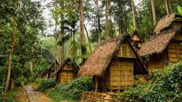
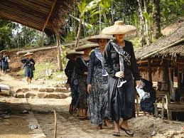

Kampung Adat Baduy
Sejarah singket jeung Lokasi
Kampung Adat Baduy aya di Lebak, Banten. Masyarakatna ngajaga adat Sunda asli jeung hirup sederhana tanpa teknologi modern. Kampung kabagi jadi Baduy Luar jeung Baduy Dalam, hirup sauyunan jeung alam.

Fakta Unik
Baduy hirup tanpa listrik jeung alat modern. Baduy Dalam make baju bodas, Baduy Luar biru. Maranehna ngajaga leuweung, walungan, jeung sistem sosial adat anu kuat.

Informasi lainna
Masyarakat dipimpin ku puun atawa jaro. Bangunan sederhana tina bahan alam. Aturan adat ketat ngajaga kasaimbangan alam jeung tradisi Sunda Wiwitan.